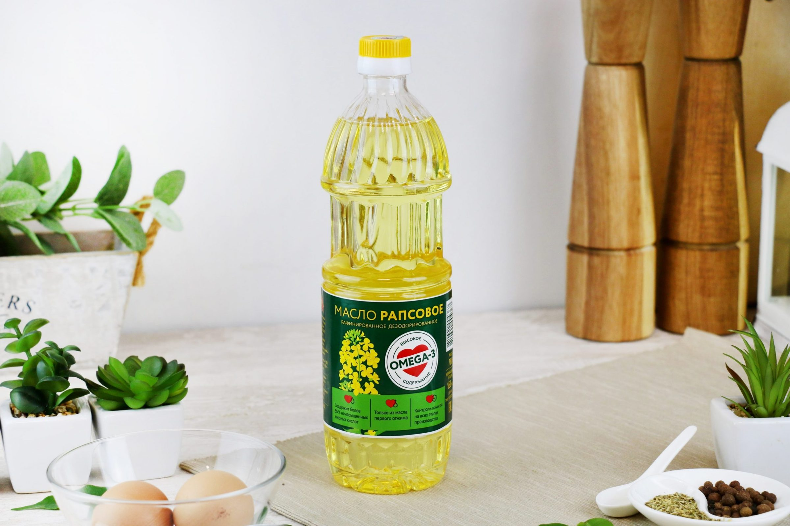
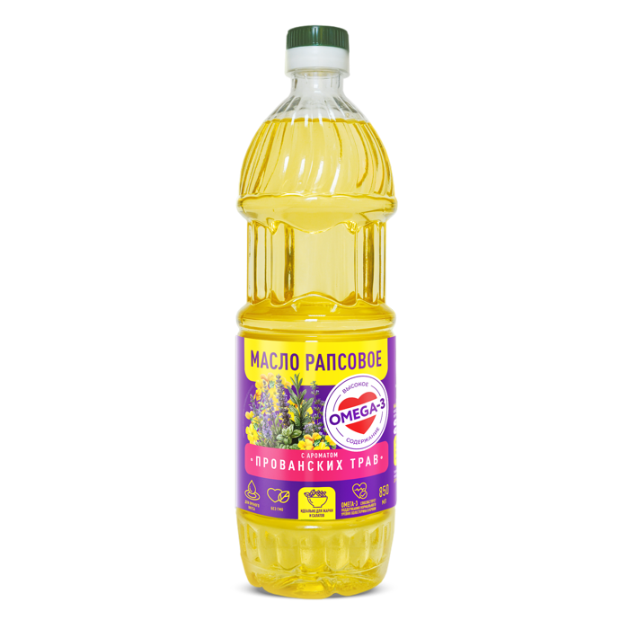
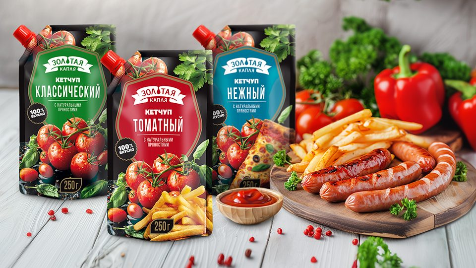
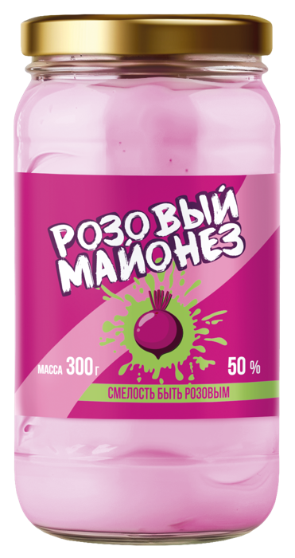
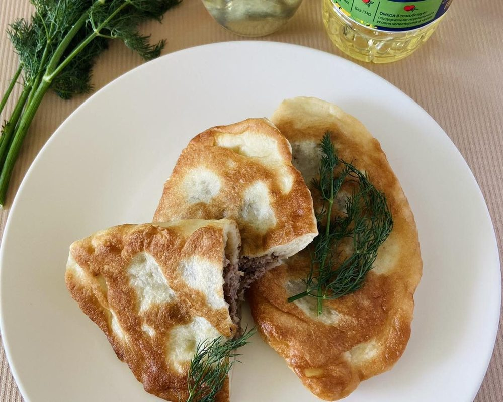
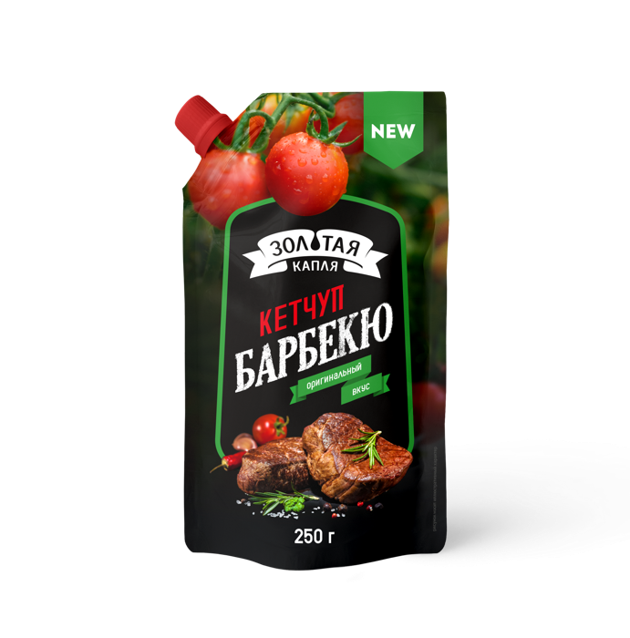
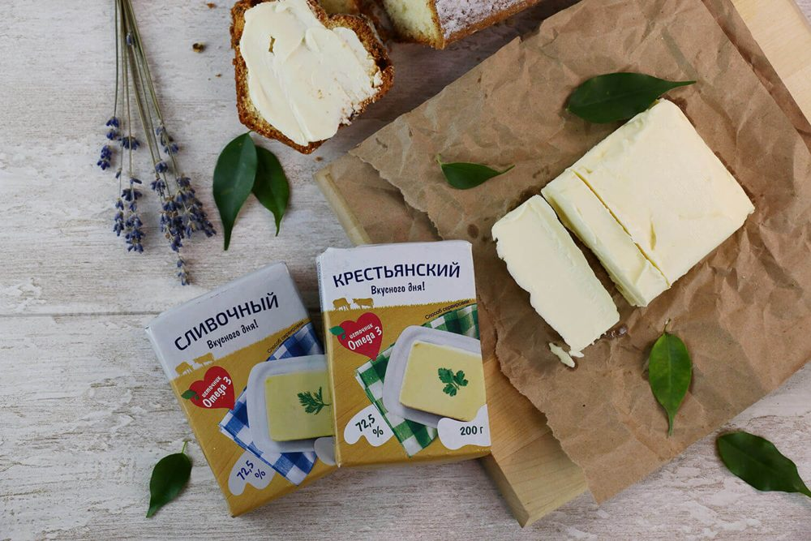
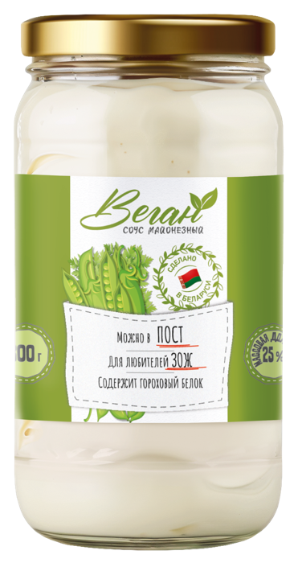
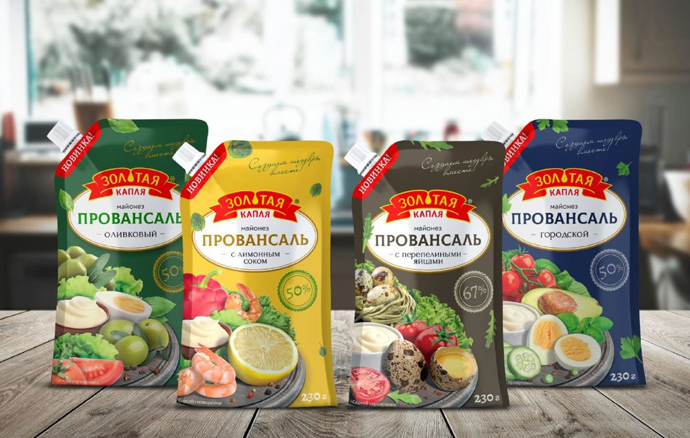
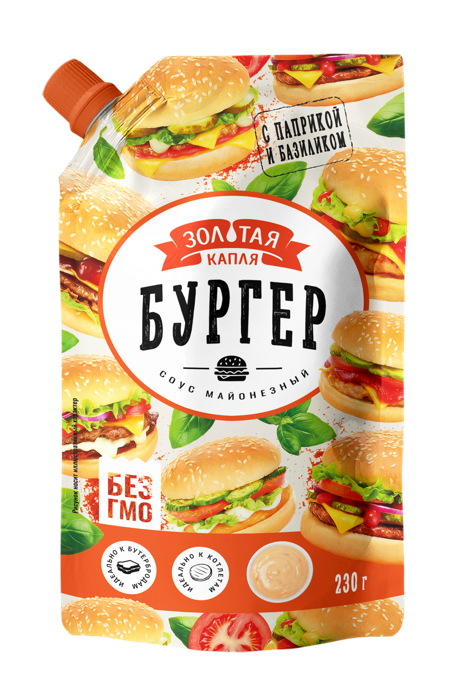

Минский маргариновый завод выпускает больше 80 продуктов под маркой «Золотая капля». Без ГМО, искусственных красителей и ароматизаторов.










Продукция
Майонезы и соусы для дома, маргарины и жиры в ящиках по 20 кг для производств. Состав, фасовка и сроки хранения есть на странице каждого продукта.
Рецепты
На сайте собраны рецепты, где наши продукты работают по назначению: медовик на маргарине, чебуреки и кабачки в кляре на рапсовом масле, блинчики на молоке.
Все рецептыПартнёрам
Работаем с торговыми сетями, дистрибьюторами и производствами. Условия обсуждаем с каждым партнёром отдельно.
Написать в отдел продаж